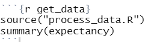

Chapter 8 R 마크다운
R Markdown을 사용하여 이전 장에서 설명한 기능을 통합하는 보고서를 만들어 보자. R Markdown은 HTML, CSS 및 Markdown과 같은 무료로 사용 가능한 오픈 소스 기술을 활용하여 다양한 형식으로 풍부한 보고서를 생성한다.
R Markdown은 사람이 읽을 수 있는 방식으로 문서를 정의하는 간단한 방법인 Markdown을 기반으로 하고 있다. 아이디어는 구조화된 방식으로 빠른 메모를 작성할 수 있다는 것이다. 이러한 노트는 자체적으로 읽을 수 있지만 웹 페이지, 프레젠테이션 및 PDF 파일과 같은 세련된 프레젠테이션 형식으로 변환할 수도 있다.
RStudio는 R 언어의 코드와 그래픽을 Markdown 문서에 추가하여 Markdown을 확장해 준다. 이러한 유형의 Markdown을 “R Markdown”이라고 한다. R Markdown을 사용하여 공유 가능한 보고서를 작성하기 위해 기대 수명 분석을 사용하기로 한다.
8.1 R Markdown 문서
R Markdown은 RStudio에서 완벽하게 지원된다. Markdown에서 메모를 작성할 수 있을 뿐 만 아니라 포함된 코드를 블록 단위로 실행하여 R Markdown 문서에 실시간으로 바로 표시할 수도 있다. 새 R Markdown 문서를 만들려면 RStudio 메뉴 모음으로 이동하여 그림 8.1과 같이 “File,” “New File” 그리고 “R Markdown”을 클릭한다.
그림 8.1: 새 R 마크다운 문서 추가
그림 8.2에 표시된 대화 상자에 생성되는 문서의 유형을 결정하는 옵션이 표시된다.
그림 8.2: R 마크다운 옵션
여기에서 HTML 또는 PDF 문서를 원하는지 지정한다. 실험할 수 있는 덜 사용되는 다른 형식 유형도 있지만 일반적으로 사람들은 PDF 또는 HTML 보고서를 사용한다. RStudio는 그림 8.3과 유사한 템플릿 텍스트로 R Markdown 문서를 자동으로 생성한다.
그림 8.3: R 마크다운 문서
위의 R Markdown 문서에는 4 개의 개별 섹션이 있다. 처음 여섯 줄은 일명 YAML(Yet Another Markup Language)이라고 한다.
---
title: "Life Expectancy"
author: "Dae Ho Kim"
date: "2021 1 3"
output: html_document
---이 YAML markup은 출력 형식의 유형 및 작성자 이름, 기본적으로 대화 상자에 입력한 내용을 지정한다.
회색으로 강조 표시된 다음 세 줄은 R Markdown 출력을 렌더링하는 데 사용되는 패키지 인 knitr에 필요한 옵션을 설정하는 데 사용된다.
```{r setup, include=FALSE}
knitr::opts_chunk$set(echo = TRUE)
```세 개의 백틱(```)과 중괄호({})가 있는 첫 번째 줄은 주의를 기울여야 한다. 이것은 문서에 R 코드를 포함할 수 있도록 Markdown 코드를 이스케이프하는 데 사용하는 표기법이다.
형식은 대략 세 개의 백틱, 여는 중괄호, 문자 r 다음에 몇 가지 옵션 그리고 끝 중괄호이다.
위 코드에서 setup은 단순히 레이블이고 include = FALSE는 코드가 실행되지만 R Markdown 출력에 표시되지 않음을 의미한다.
다음 몇 줄의 코드는 기본적인 Markdown이다.
## R Markdown
This is an R Markdown document. Markdown is a simple formatting syntax for authoring HTML, PDF, and
MS Word documents. For more details on using R Markdown see <http://rmarkdown.rstudio.com>.여기에서 데이터 분석에 대한 결과, 절차 그리고 설명을 작성한다. 시작 부분에 있는 두 개의 숫자 기호는 “제목 2”를 의미하며 형식화는 출력 문서에 이를 반영한다. 모든 일반 Markdown 기능을 사용할 수도 있다. Markdown의 작성자는 https://daringfireball.net/projects/markdown에 사용할 수 있는 서식 지정 기능을 문서화하고 있다.
나머지 코드는 또 다른 R 청크(chunk)이다. 이번에는 코드가 플롯을 생성하고 R Markdown 출력에 포함된다.
```{r cars}
summary(cars)
```내장된 cars 데이터 세트의 요약이 출력된다. 다음에 다룰 예제에서 이것이 어떻게 보이는지 예제를 통해 살펴 볼 것이다.
8.2 R Markdown 예
지금까지 수행한 작업 중 일부를 보고서에 추가하여 R Markdown을 살펴보기로 한다. 그 과정에서 R 스크립트 파일을 소싱하고 보고서에 그래픽을 삽입할 것이다. “life_expectancy.Rmd”라는 이름으로 만든 새 R Markdown 문서를 저장하여 시작하자.
템플릿에 제공된 상용구 소개를 우리의 작업에 대해 설명하는 것으로 대체하는 것으로 시작한다.
## 서론
[Life expectancy data]
data.gov의 [다운로드](https://catalog.data.gov/dataset/nchs-death-rates-and-life-expectancy-at-birth-6db3e)사이트에서 데이터가 다운로드 되었다.이 데이터 세트에는 1900 년부터 2015 년까지의 사망률과 기대 수명 통계가 포함되어 있다.이 데이터 세트에 대해 탐색적 분석을 수행하였는데, 이제 R Markdown의 출력 파일에 출력되는지 살펴 보겠다. R Markdown 문서 상단에 있는 메뉴 모음을 선택한 다음 “Knit”드롭 다운을 클릭한 다음 그림 8.4에 표시된대로 “Knit for HTML”을 선택합니다.
그림 8.4: HTML 출력 파일 만들기
이렇게 하면 R 및 Markdown 코드를 사용하고 R 패키지 knitr를 사용하여 그림 8.5와 같이 HTML 보고서를 만든다.
그림 8.5: R Markdown HTML 출력
이제 멋진 형식의 보고서를 시작했다. 물론, 우리는 여전히 cars 데이터 세트의 필터를 보여주고 있지만, 다음 단계에서 살펴보기로 한다.
8.3 R Markdown 재현성
우리의 분석이 재현 가능하다고 말할 때, 우리는 보고서를 다시 실행해도 과거와 똑같은 결과를 얻을 수 있어야 함을 의미한다. 우리의 분석은 명령 줄에 입력 한 임의의 명령에 의존해서는 안된다. 분석이 재현 가능한지 확인하기 위해 source() 명령을 실행하고 expectancy 데이터 세트를 가져 오는 데 사용한 파일을 불러온다. r 코드 블록을 이것으로 바꾸고 데이터 세트의 요약을 포함한다.

위의 코드 블록에서 몇 가지 작업을 수행했다. 레이블을 “get_data”로 변경하고 소스를 사용하여 “process_data.R”에 저장된 모든 코드를 실행하고 expectancy 데이터 세트의 요약을 표시한다. Markdown 파일을 knit 하면 cars 데이터 세트 대신 expectancy 데이터 세트의 요약이 나타난다.
더 중요한 것은 R Markdown 문서의 다른 코드가 이전에 했던 것과 같은 방식으로 expectancy 데이터 세트에서 참조할 수 있다는 것이다. 이전에 따랐던 모든 데이터 처리 규칙은 새 출력 문서를 만들 때마다 실행된다.
데이터 시각화 장에서 했던 것처럼 사용자에게 데이터 세트를 간략하게 보여줄 수 있다. 마지막 부분에서 코드를 복사하여 다음과 같이 코드 블록으로 감쌀 수 있다.
## `expectancy` 데이터 세트 샘플
`expectancy` 데이터 세트의 일부 내용을 확인하기 위한 위젯을 아래와 같이 확인할 수 있다.
여기에서의 분석에서 나중에 검토될 데이터 세트를 보여주고 있다.
```{r}
library(DT)
datatable(expectancy,
options = list(pageLength = 5))
```여기서 우리는 그림 8.6에서 볼 수 있는 디스플레이를 생성하기 위해 r 코드 블록과 함께 Markdown 주석을 혼합한다.

그림 8.6: R Markdown 문서의 HTML 데이터 테이블 위젯
마지막으로, 수년에 걸친 기대 수명 플롯을 추가해 보자. 이번에는 사용자로부터 r 코드 블록을 숨기고 싶을 수 있으므로 이러한 두 가지 지시문 echo = FALSE와 message = FALSE를 포함한다.
## 기대 수명 플롯
아래의 플롯은 모든 성별에 대한 연도별 기대 수명을 보여주고 있다.
```{r}
library(plotly)
i_plot <- expectancy %>%
filter(race == "All Races") %>%
ggplot(aes(year, life_expectancy)) +
geom_line(aes(color = sex))
ggplotly(i_plot)
```보다시피, 1900년부터 2015년까지 모든 사람의 기대 수명이 증가하였다. 여성은 남성보다 기대 수명이 더 길고 두 그룹의 차이를 유지하면서 동일한 상승 추세를 보이고 있다.
첫 번째 지시문은 코드가 표시되지 않도록 하고 두 번째 지시문은 문서에서 라이브러리를 로드하기 때문에 나타날 수있는 모든 메시지를 방지한다. 결과는 그림 8.7에 나와 있다.

그림 8.7: R Markdown 문서의 Plotly 위젯
8.4 결론
R Markdown은 강력한 보고서 생성 시스템을 제공한다. 이 장에서는 보고서 작성자가 사용할 수있는 기능에 대해 간략히 설명했다. 이는 조직 전체에서 공유 할 수 있는 분석을 개발할 때 보고 작업을 수행하는 도구가 된다.